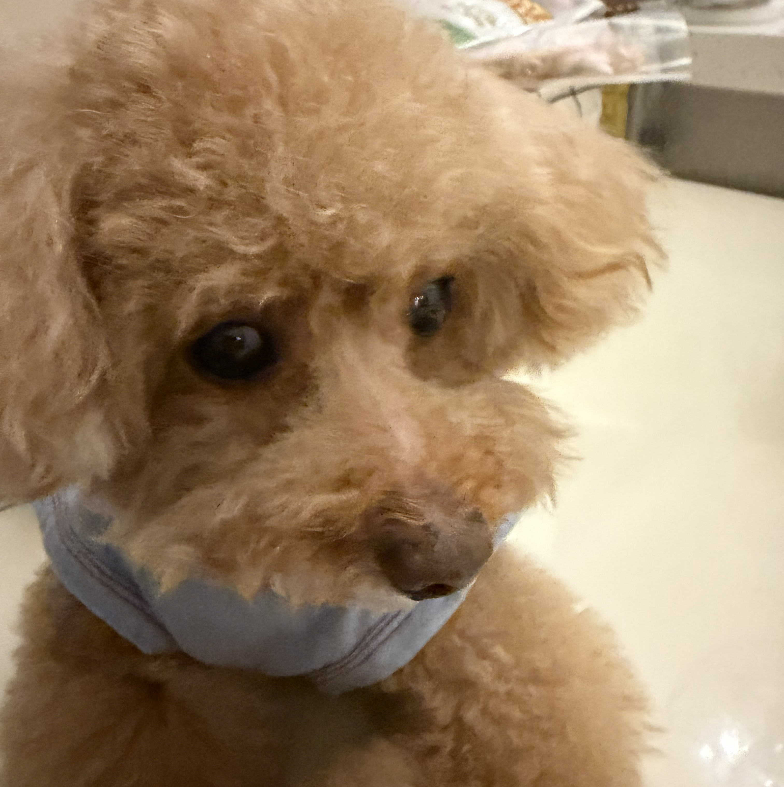
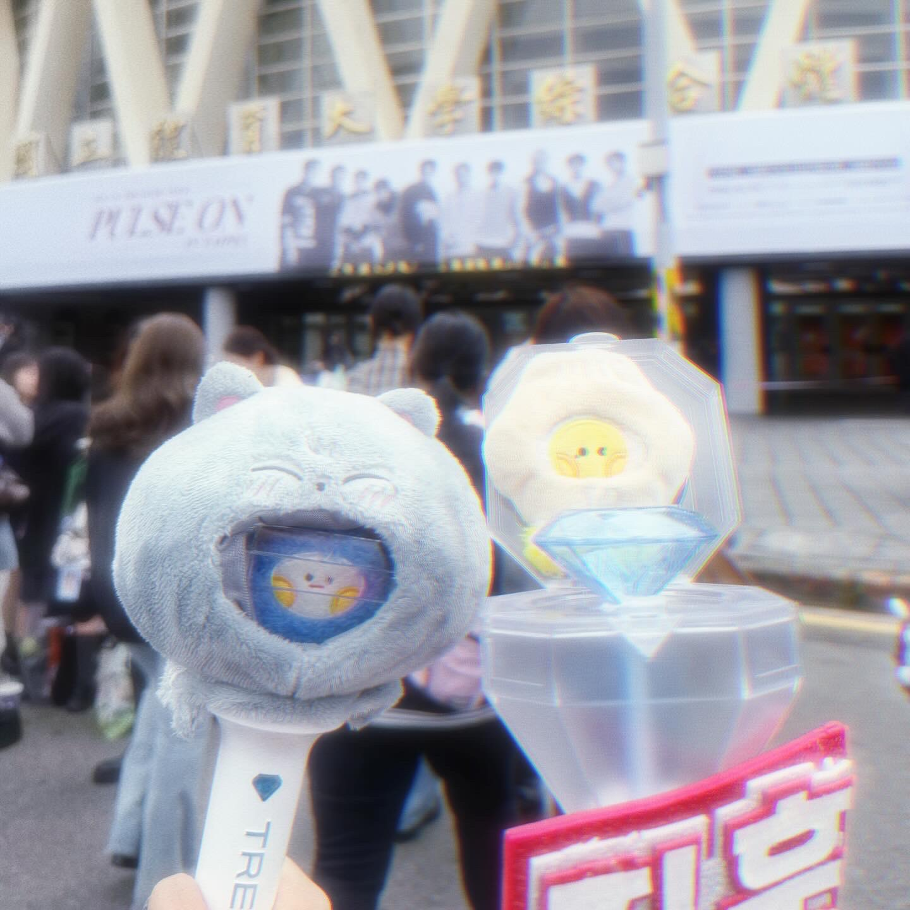

關於我
嗨咿！我是林怡瑄，這是我的個人網頁
我目前是國立清華大學外國語文系的大二生，雙主修於藝術學院學士班的科技藝術組。
外語系的課程當中，我相較於文學，對語言學更有興趣。其中心理語言學以及腦科學中的語言與認知是我最感興趣的領域。在這兩個領域的相關課程中，我學到很多像是大腦如何處理語言以及學習新語言，還有語言如何和認知、行為相互影響。此外，我一直很想學動畫製作以及互動式裝置的設計，因此選擇了有開設相關課程的科技藝術做為雙主修。期許自己在未來能夠結合創意、技術與人文思考，用自身所學創作出能夠與觀眾產生連結的作品。
在興趣部分，作為極度熱愛KPOP的追星女，我常常在空閒時間看偶像的物料。為了能更好的理解他們說什麼也去學了韓文，在學習韓文的過程中我也對音樂內容還有韓國文化有了更深的理解與認識。此外，我非常喜歡跟家裡的小狗一起玩，牠們活潑可愛的個性總能把我內心的陰霾掃空，療育我的生活並帶來許多歡樂。這些興趣不僅豐富了我的生活，也讓我在繁忙的學習之餘保持對生活的熱情。

這是我家的狗狗

TREASURE演唱會場外
關於我的介紹就到這裡結束啦~ 點選箭頭可以更了解我最愛的KPOP偶像團體！